Obtenir le tracé d'une courbe définie par une ou des relations mathématiques, afin de pouvoir en déduire certaines propriétés, représente une des activités importantes pour les scientifiques qui utilisent les ordinateurs. Disons tout de suite qu'à de très rares exceptions près, un dispositif de sortie graphique ne produira pas de courbes, mais des segments de droite (ou bien des points isolés). Ce sera à l'utilisateur d'approcher la courbe par une suite de segments, en effectuant un compromis entre le temps de calcul et le nombre de segments employés. Il y a de nombreuses façons de se donner une courbe plane; nous en mentionnons trois :
Traditionnellement la plus étudiée, la forme explicite est rarement la meilleure pour un tracé; les tangentes verticales ne sont pas admises, la longueur d'un segment pour un _x donné varie suivant la valeur de la dérivée y'; la forme de la fonction f dépend fortement du système d'axes choisi. Cependant, certaines de ces courbes sont souvent "sans problèmes", comme les polynômes ou bien les exponentielles.
Pour tracer une telle courbe pour un intervalle en x allant de xmin à xmax,
on utilisera la méthode triviale suivante :
N := {se donner le nombre
d'intervalles};
dx := (xmax - xmin)/N;
x(1) := xmin;
y(1) := f(x(1));
pour i := 1 à N faire
début
x(i+1):= x(i) + dx
y(i+1):= f(x(i));
fin ;
Ensuite on trace. Il convient naturellement, pour agrémenter le dessin, d'ajouter les axes, des titres, un cadre, le nom du programmeur, la date, une échelle, etc., toutes choses sans difficulté mais demandant des soins.
Les courbes données sous forme implicite sont les plus
difficiles à traiter graphiquement et nous n'allons traiter de la méthode pour
les tracer. On peut parfois les transformer en une autre catégorie, comme
l'exemple type que l'on retrouve partout : l'équation d'un cercle peut
être donnée par x2 + y2 - 1 = 0.
On effectue le tracé en deux moitiés, définies respectivement par
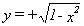
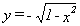
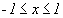
.Il s'agit évidemment d'un exemple malhonnête, car l'aspect implicite de la première équation n'a pas été résolu : que faire quand on ne peut justement pas "résoudre" en y ? Il faut pour cela obtenir d'abord un point sur la courbe: (xo, yo) tel que f(xo, yo) = 0, problème qui par lui-même est quelquefois difficile. On doit ensuite suivre la courbe par des méthodes numériques, en obtenant une suite de points sur cette courbe, ou du moins à proximité. Ceci implique l'utilisation de méthode numérique comme celle de Newton.
Les courbes paramétriques sont les plus agréables: il suffit de se donner
une valeur du paramètre pour obtenir un point sur la courbe. De plus, le
paramètre peut généralement être assimilé à une variable de temps
associée à une particule suivant la courbe, ce qui fournit une représentation
mentale très commode. Des formes très variées sont accessibles par ce
procédé. Le problème du fenêtrage est cependant parfois délicat, car il
n'est pas évident de déterminer à priori pour quelles valeurs du paramètre
seront obtenus les extremums en x et y. Lorsqu'on veut tracer une courbe
paramétrique pour des valeurs du paramètre t allant de tmin à tmax, on
adaptera de façon naturelle l'algorithme donné plus haut.
N := {nombre d'intervalles};
dt := (tmax = tmin)/N;
x(1) := f(tmin); y(1):= y(tmin);
t := tmin;
pour i:= 1 à N faire
début
t:= t + dt;
x(i+1):= f(t) ; y(i+1):= g(t);
fin;
Remarquons aussi qu'il n'y a pas unicité dans la forme que peut revêtir
l'équation d'une figure géométrique donnée. Exemples :
(1) Une droite peut apparaître sous les formes
y = mx + b (explicite)
ax + by + c = 0 (implicite)
x = f(t), y = m f(t) + b, (paramétrique)
(2)Un quart de cercle peut être donné par
une forme explicite :
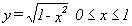
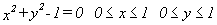
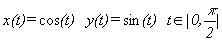
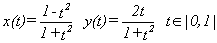
Une autre variante consiste parfois à utiliser les coordonnées polaires
pour simplifier la formulation mathématique. Les bonnes vieilles relations
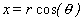
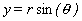
On remarquera d'ailleurs que l'aspect du tracé obtenu, en prenant le même nombre de points pour approximer la courbe, dépend généralement de la forme choisie.
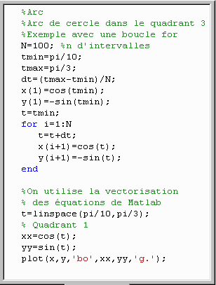
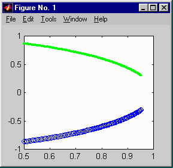
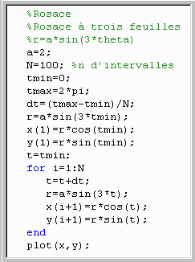
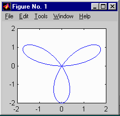